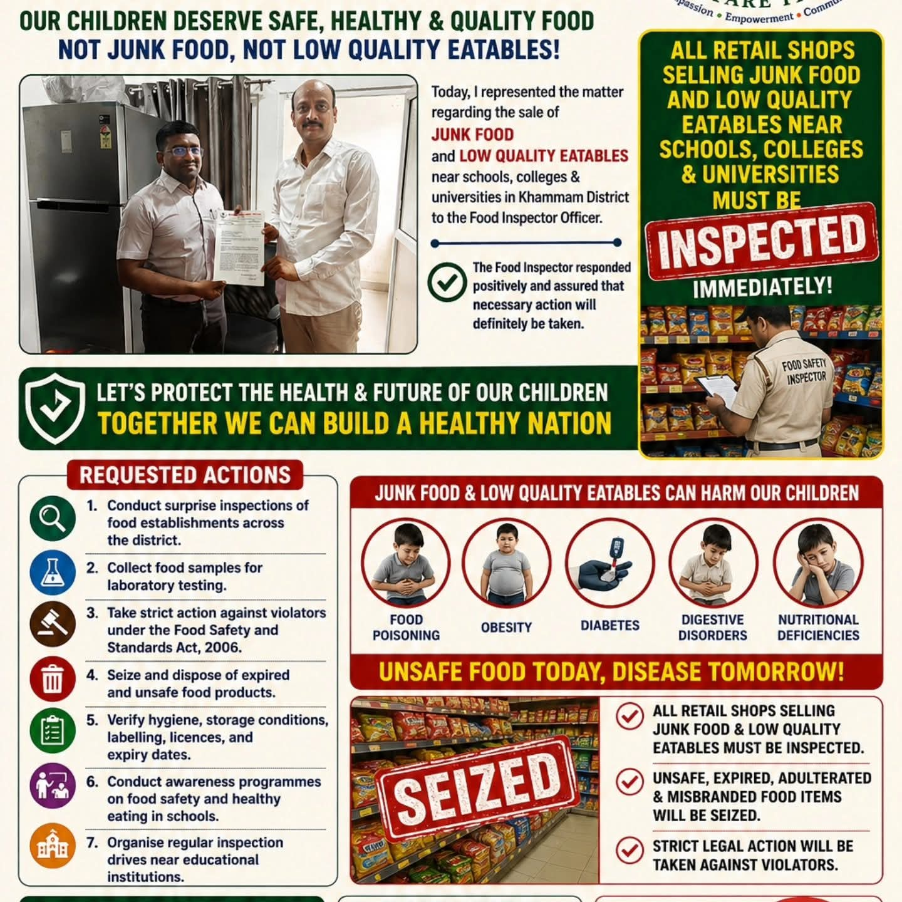
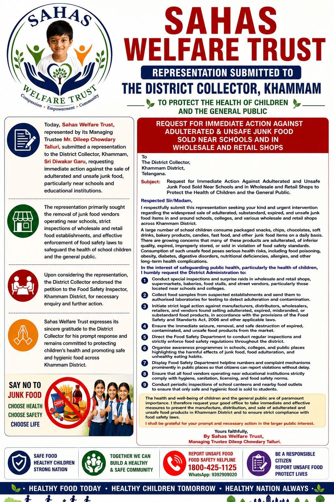
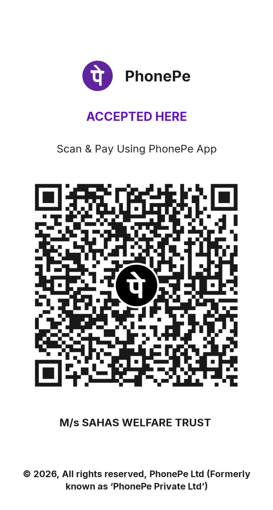

01
Food-safety advocacy
Calling attention to unsafe, expired, or low-quality food, especially near schools.
See the campaignSafe food. Healthy children. Stronger communities.
Sahas Welfare Trust works to protect children and the community by speaking up for safe food and healthier choices, especially around schools and learning spaces.

Who we are
We believe every child deserves food that is safe, hygienic, and nourishing.
Sahas Welfare Trust raises awareness about unsafe and low-quality food and advocates for stronger food-safety action around schools and in local communities. We work to bring public concerns to the right people and encourage healthier choices for children.
See our food-safety campaignOur focus
Our food-safety work brings attention to risks children face and the practical steps communities and authorities can take.
Calling attention to unsafe, expired, or low-quality food, especially near schools.
See the campaignEncouraging safe, nutritious food choices that support children’s health and wellbeing.
See the campaignBringing public concerns forward and supporting stronger food-safety checks.
Get in touchCampaign focus described from the materials shared by Sahas Welfare Trust.
Read, learn, share
Food safety is a shared responsibility. Simple habits at home, at school, and wherever food is prepared can help reduce risks.
Wash hands, utensils, and food-preparation surfaces. Keep food protected from dirt and pests.
Keep raw foods apart from cooked and ready-to-eat foods to help prevent cross-contamination.
Cook food thoroughly, and reheat cooked food well before serving.
Keep food at safe temperatures. Do not leave cooked or perishable food out for long periods.
Use safe water and fresh, wholesome ingredients. Check food labels and expiry dates.
Food safety in action
These campaign materials show the issues Sahas Welfare Trust has raised and the food-safety actions it has requested.

Calling for safe, quality food and action on unsafe food sold near schools and colleges.

Requesting inspections, testing, and action to help protect children and the public.
Safe food today. Healthy children tomorrow.
Support Sahas Welfare Trust
If you are able, please consider making a contribution to support our food-safety awareness and advocacy work.
Every contribution, whatever its size, is appreciated and helps us continue working towards safer food and healthier communities. Thank you for standing with us.

Open your PhonePe app and scan this code. Please confirm the payee name before completing your payment.
Be part of the change
Raise awareness, share reliable information, and stand with efforts to keep children’s food safe.
Let’s connect
Have a question, an idea, or want to get involved? We’d love to hear from you.
Serving with care, wherever we’re needed.
Replace the sample email address with the trust’s official contact email before publishing.